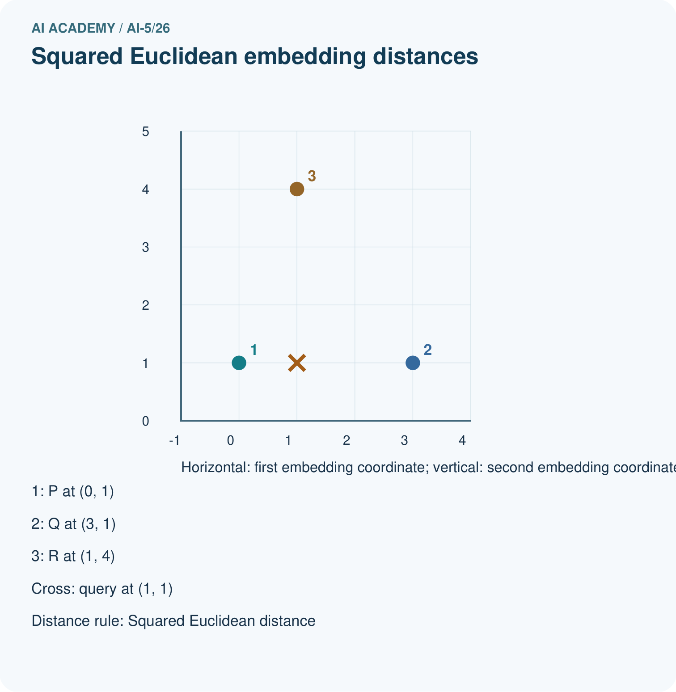
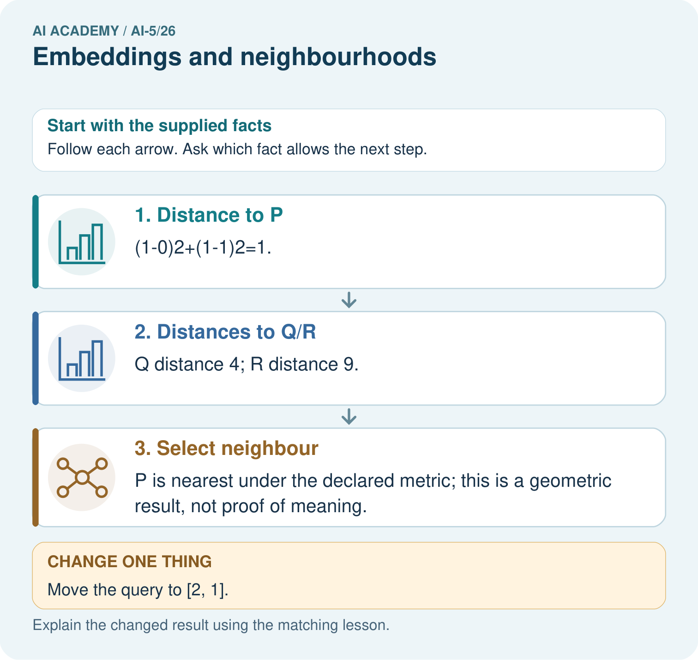
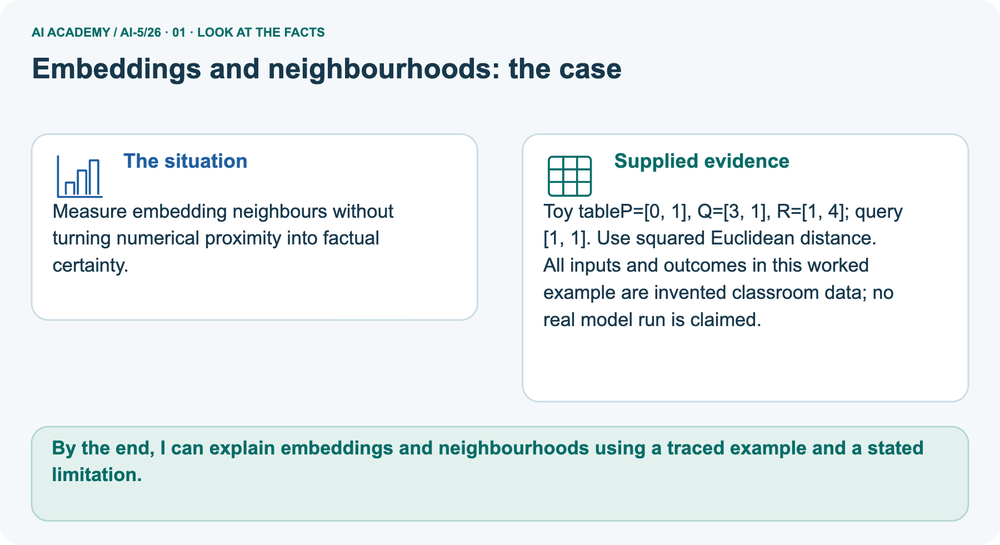
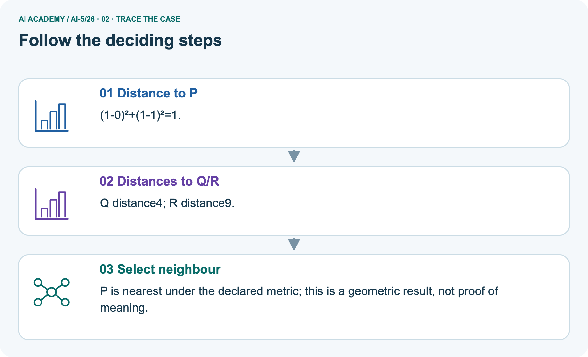
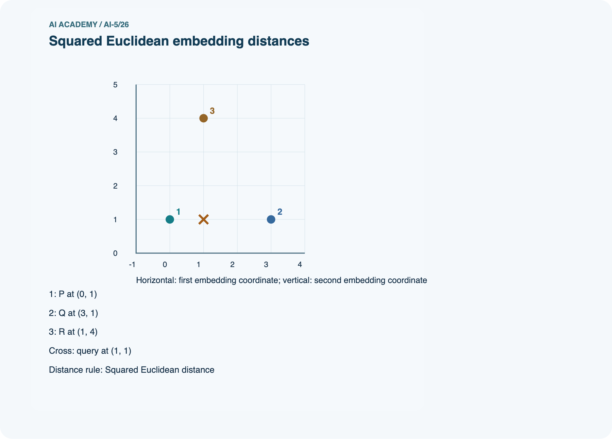
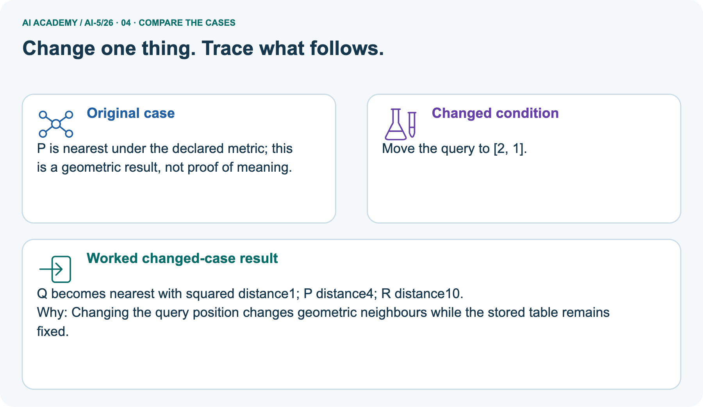

AI Academy · Level 5 · Grade 10 · Week 26 · Teacher guide
Embeddings and neighbourhoods
Learn to understand, design, build, test and explain AI systems responsibly.
Project: Image-pattern Network Investigation
Teacher guide · 1 of 9
Prepare the purpose, prerequisites and materials
Prepare Embeddings and neighbourhoods: check the target, prerequisites, resources and adaptable teaching schedule.
Teach the learning cycle
Primary target: Look up a vector using a token ID and preserve sequence shape
| Session | Sequence and minutes | Resources |
|---|---|---|
| Session 1 · Understand · 45 min | 0–7: recall and prerequisite; 7–15: inspect the concrete case and predict; 15–30: teacher models the worked trace; 30–40: learners explain a step using the text and visual; 40–45: check the core idea. | Sections 1–6; record the brief recall in the workbook. |
| Session 2 · Practise · 45 min | 0–5: retrieve the procedure; 5–15: W2 completion practice; 15–23: explain and check with a partner; 23–30: each learner answers the misconception check; 30–40: targeted reteaching or a harder variation; 40–45: prepare the investigation. | Sections 7–10; use the matching workbook W2 and misconception check. |
| Session 3 · Investigate and transfer · 45 min | 0–5: retrieve the decision rule; 5–20: investigate or trace; 20–30: start the independent case; 30–38: connect the project; 38–43: act on feedback; 43–45: plan the return check. | Sections 9 and 11–14. Give extra time to finish the full task set; use Section 15 when the week includes a coding lab. |
This is a starting allocation of 135 minutes, not a validated duration. Preserve all named topics. Schedule extra time for connected examples, the full investigation, independent cases and project building.
Repeated copies of a case share one recorded attempt; they are not new evidence.
Retrieval answer guidance
Sequence representations
Without opening the old lesson, explain one key idea from Sequence representations. Give an example and a mistake that the idea helps you avoid.
Look for: Encode an ordered sequence with an explicit vocabulary
Reference example, not the only acceptable wording: Teacher explanation: IDs are [2, 3, 4, 0], mask [1, 1, 1, 0], real length 3 and final real event STOP at position 2.
Training a small image model
Without opening the old lesson, explain one key idea from Training a small image model. Give an example and a mistake that the idea helps you avoid.
Look for: Trace a complete image model with fixed features and one trained weight
Reference example, not the only acceptable wording: Teacher explanation: d = 2, h1 = 2 and h2 = 0. Score is 0.9, prediction class 1 and squared error (0.9 - 1) squared = 0.01.
Image tensors and channels
Without opening the old lesson, explain one key idea from Image tensors and channels. Give an example and a mistake that the idea helps you avoid.
Look for: Read a pixel using declared row column and channel axes
Reference example, not the only acceptable wording: Teacher explanation: The RGB pixel is [0, 0, 255]; its blue value is 255. Shape is 2 by 2 by 3, with four pixels and twelve channel values.
Use two 45-minute sessions. Begin with the difference between an identifier and its looked-up vector.
The original table is authored, not learned; the separate one-row update demonstrates optimisation under a stated artificial objective. Do not attach invented semantic labels to the two coordinate axes.
Keep original and updated table versions separate.
Outcomes
Look up a vector using a token ID and preserve sequence shape
Calculate nearest neighbours with an explicit distance and tie rule
Distinguish constructed vectors from learned features and limit similarity claims
Preparation
Printed lesson and workbook; paper and pencil
Calculator and optional local Python 3 editor; no packages or AI accounts needed
Use the fictional examples supplied; prepare the fresh retry before class
Prerequisite answer
IDs are assigned identifiers. Their numerical order and spacing have no declared semantic meaning; a consistent relabelling can change those differences without changing the symbols.
End goal for the pictorial case
By the end, I can explain embeddings and neighbourhoods using a traced example and a stated limitation.
This added worked case illustrates the week’s main idea. Retain all original and connected topics; schedule its practice within the teaching cycle.
Teacher guide · 2 of 9
Explain and model the mechanism
Model Embeddings and neighbourhoods using the supplied case, labelled mechanism and reasoning. Make the scope of each conclusion explicit.
Explain Embeddings and neighbourhoods · 1
Continue the fictional robot vocabulary and add WAIT as ID 5. Use the table below, chosen by the lesson author for arithmetic practice. These coordinates are not measured robot properties and were not learned from data.
Each token ID selects one row; the resulting two-component vector is its embedding in this example.
The table shape is 6 by 2: six vocabulary entries and embedding dimension 2. The ID sequence [2, 4, 0, 0] becomes [[2, 0], [0, 2], [0, 0], [0, 0]], with shape 4 by 2. Its mask remains [1, 1, 0, 0].
The vector dimension is not the sequence length or vocabulary size.
A zero PAD vector does not remove the need for masking. Averaging all four vectors above gives [0.5, 0.5]; averaging only the two real vectors gives [1, 1].
UNK is a real position when it replaces an unknown symbol, so its vector is not automatically excluded.
Use squared Euclidean distance: square each component difference and add. From GO [2, 0] to TURN [1, 1], the distance is (2 - 1) squared + (0 - 1) squared = 2. To STOP it is 8; to WAIT it is 5.
TURN is therefore the nearest of those three under this table and metric.
Explain Embeddings and neighbourhoods · 2
The candidate set excludes PAD, UNK and the query token itself. Otherwise a query would normally retrieve itself at distance zero.
This code assumes finite numeric components and uses exact ties, appropriate for these integer examples. Floating-point comparisons in other experiments need a declared precision policy.
| Term | Meaning |
|---|---|
| Embedding table | A table assigning a fixed-length numerical vector to each token ID |
| Embedding dimension | The number of components in each embedding vector |
| Neighbourhood | Nearby candidates under a stated representation and distance rule |
| Squared Euclidean distance | The sum of squared component differences between two vectors |
One query can have two closest candidates
Explain Embeddings and neighbourhoods · 3
Guided: STOP distances to GO, TURN and WAIT are 8, 2 and 1, so WAIT is nearest. Exit: the original table and squared Euclidean rule place TURN nearest to GO among the stated candidates.
That is not proof of equivalent meaning or substitutability.
A lower artificial training objective only supports improvement on that objective; useful task behaviour requires appropriate independent evaluation and error analysis.
Model the reasoning aloud
Use the complete worked example below before asking learners to complete W2. Reveal a small part, invite a prediction, then explain the deciding step.
These teacher notes contain solutions; do not reveal the independent case answer during modelling.
One query can have two closest candidates
| Thinking move | Teacher prompt |
|---|---|
| Plan | What is given? What is the question? Which procedure fits these facts? |
| Do | Point to each input and intermediate step in the worked trace. Name the rule that allows the next step. |
| Check | Does the output answer the question? Which assumption or limitation prevents a larger claim? |
Use the diagram and verbal explanation together. Ask learners to match a sentence to a specific visual step; do not assign learners fixed visual or auditory learning styles.
A pictorial worked case: Embeddings and neighbourhoods
Measure embedding neighbours without turning numerical proximity into factual certainty.
The facts we will use
Supplied facts
Toy tableP=[0, 1], Q=[3, 1], R=[1, 4]; query [1, 1]. Use squared Euclidean distance.
Supplied facts
All inputs and outcomes in this worked example are invented classroom data; no real model run is claimed.


Read the picture one step at a time
Why this result follows
Why the result follows
An embedding stores each item as an ordered vector. Under squared Euclidean distance, subtract matching coordinates, square their differences and add. The smallest total identifies the nearest supplied vector.
These invented coordinates let us check geometry exactly; a claim that neighbours share meaning needs evidence about how the representation was learned and used.
What this example does not establish
Keep the stated limit
Embedding geometry depends on training, metric and scale; proximity does not prove truth, causation or source permission.
Change one thing in the pictured case
Change one thing
Change: Move the query to [2, 1].
Predicted result
Prediction: Q becomes nearest with squared distance1; P distance4; R distance10.
Why the result follows
Reason: Changing the query position changes geometric neighbours while the stored table remains fixed.
Ask while showing the picture
Ask while showing the picture · 4
Cover the result. Ask learners to name the inputs and predict the next step. Uncover one step, connect the icon to the actual procedure, and explain its evidence. Then change the supplied condition and compare.
The picture is a representation; it does not document execution of a real AI model.
Teacher guide · 3 of 9
Demonstrate and guide practice
Demonstrate Embeddings and neighbourhoods, reduce support deliberately and check individual reasoning before discussing answers.
| Time or stage | Teacher action |
|---|---|
| Session 1 start to 7 minutes | Retrieve arbitrary IDs and label vocabulary size, sequence length and vector dimension. |
| 7 to 18 minutes | Trace table lookups and masks, then complete W1. |
| 18 to 32 minutes | Compute GO distances by hand and run or trace the nearest-neighbour code. |
| 32 to 45 minutes | Use W2 and the visual to preserve ties under an explicit candidate policy. |
| Session 2 start to 8 minutes | Complete the guided STOP query before changing any table row. |
| 8 to 20 minutes | Trace the isolated learning update and complete W3, noting the resulting collision. |
| 20 to 35 minutes | Collect W4 independently, requiring distances, the full nearest set and an order-loss explanation. |
| 35 to 45 minutes | Use W5 and the exit response to audit interpretation and version consistency, then administer the fresh retry. |
Use the worked example in Sections 3 and 6. Collect a prediction before revealing its result; ask the learner to point to each intermediate fact.
Provide separate columns for token, ID and vector. Use a distance ledger with two differences, two squares and a sum; allow calculators.
Extension: consistently permute all table row IDs and show that token-level neighbour results stay unchanged, then deliberately omit the table permutation to expose the mismatch.
Reduce help deliberately
Completion practice
Completion task: For query [1, 0], compute squared distances to GO, TURN, STOP and WAIT in the original table. Return all nearest candidates.
Reasoning to listen for
Teacher check: Teacher explanation: Distances are 1, 1, 5 and 2 respectively. The nearest set is GO and TURN; ordering their names does not remove the tie.
Start by identifying the given inputs together. Leave the intermediate steps blank. If needed, model one step, then withdraw that help on the next step. Move to a full trace only when the partial trace is understood.
For partners, alternate explainer and checker; collect a response from every learner before discussion.
Individual reasoning check
Use the worked case for Embeddings and neighbourhoods. Proposed explanation: “Token ID differences define embedding distances”. Decide whether this explanation is supported.
Point to the step or supplied fact that decides; explain your repair if needed.
Expected repair
Expected correction: The ID selects a row; distances are computed between row vectors.
Collect explanations, not only yes/no votes. If a misunderstanding is common, re-model the relevant step for the class.
If it affects a few learners, give a short targeted group explanation while others solve a more demanding variation.
Pictorial practice question
What would justify claiming nearby vectors mean related topics? Point to the relevant step in the picture, then write the changed result and the rule or evidence that supports it.
Reasoned teacher answer
Evidence about how the table was learned plus task-specific evaluation. These invented coordinates alone establish only distances. Changed-case check: Q becomes nearest with squared distance1; P distance4; R distance10.
Changing the query position changes geometric neighbours while the stored table remains fixed.
Changed-case reasoning: Q becomes nearest with squared distance1; P distance4; R distance10. Changing the query position changes geometric neighbours while the stored table remains fixed.
Collect each learner’s explanation before discussion. Use the first missing connection between input, deciding step and result to choose support. This question is worked-case practice, not fresh mastery evidence.
Teacher guide · 4 of 9
Run the investigation and diagnose misconceptions
Run the Embeddings and neighbourhoods investigation and use the first unsupported step to choose a teaching response.
Token ID differences define embedding distances: The ID selects a row; distances are computed between row vectors.
Nearest always means interchangeable: Closeness depends on representation, metric and candidates, and need not preserve task labels or meaning.
A learned embedding cannot lose identity: Two rows can coincide, and sequence aggregation can create additional collisions.
Use Section 9 for the evidence ledger. Add a boundary or missing-input case and record the expected response before checking. More successful repeats of one case do not establish wider coverage.
Match the support to the first error
| What the response shows | Next teaching action |
|---|---|
| Missing or misread facts | Read the case aloud, mark supplied versus unknown facts, and let the learner restate it. |
| Wrong procedure | Return to the deciding step in the worked case. Contrast it with the proposed incorrect explanation. |
| Arithmetic or implementation error | Trace intermediate values or lines; preserve the first mismatch and retry that step. |
| Correct result without a reason | Ask for a trace and a changed case before marking independent understanding. |
| An unsupported wider claim | Ask which supplied evidence supports the claim and which further observation would be needed. |
Offer an oral explanation, drawing, enlarged visual or fewer examples when that removes a reading/writing barrier. Keep the same reasoning goal.
Stretch secure learners by changing a boundary or assumption and asking them to defend the effect, not simply by assigning more of the same questions.
Teacher guide · 5 of 9
Assess and explain the answers
Use the Embeddings and neighbourhoods questions, teacher keys and criteria after the relevant attempts. Previously discussed cases are practice; protect the separately selected independent task.
Guided and exit questions
Guided: STOP distances to GO, TURN and WAIT are 8, 2 and 1, so WAIT is nearest. Exit: the original table and squared Euclidean rule place TURN nearest to GO among the stated candidates.
That is not proof of equivalent meaning or substitutability.
A lower artificial training objective only supports improvement on that objective; useful task behaviour requires appropriate independent evaluation and error analysis.
W1 Trace the lookup shape
Workbook question · W1
Using the original table, embed TURN WAIT STOP with one right-padding slot. Give the vector sequence, mask and shape.
Teacher reasoning · W1
Teacher explanation: Vectors are [[1, 1], [0, 1], [0, 2], [0, 0]], mask [1, 1, 1, 0] and shape 4 by 2.
W2 Calculate distances and a tie
Workbook question · W2
For query [1, 0], compute squared distances to GO, TURN, STOP and WAIT in the original table. Return all nearest candidates.
Teacher reasoning · W2
Teacher explanation: Distances are 1, 1, 5 and 2 respectively. The nearest set is GO and TURN; ordering their names does not remove the tie.
W3 Trace a trainable row
Workbook question · W3
For the isolated GO-row update, give the gradient, updated vector, starting loss and new loss. Which other token now shares the vector?
Teacher reasoning · W3
Teacher explanation: Gradient [4, -4], updated vector [1, 1], loss 8 before and 2 after. TURN already has [1, 1]. This collision does not establish equivalent meaning.
W4 Find a neighbourhood independently
Workbook question · W4
A separate table contains A [0, 0], B [2, 0] and C [1, 2]. For query [1, 0], give all squared distances and every nearest candidate. Then calculate the mean of A and B and compare it with the query.
Can that mean identify which ordered pair produced it?
Teacher reasoning · W4
Teacher explanation: Distances to A, B and C are 1, 1 and 4. A and B tie. Their mean is [1, 0], equal to the query. Reversing A B to B A gives the same mean, so the mean alone cannot identify the order.
W5 Keep the lookup consistent
Workbook question · W5
A developer swaps the IDs of GO and STOP but leaves the embedding rows unchanged. What goes wrong, and what must be saved or changed together?
Teacher reasoning · W5
Teacher explanation: Each token now selects the other token’s old row, changing the encoded input. Save and update the vocabulary-to-row mapping and table together, along with version and downstream model.
ID relabelling is harmless only when every lookup and consumer stays consistent.
Independent assessment and fresh retry
Teacher key · Independent assessment and fresh retry
W4 requires distances 1, 1, 4, both A and B, mean [1, 0] and a reversed-order collision. Fresh retry: query [0, 1], candidates D [0, 0], E [0, 2], F [3, 1]. Distances are 1, 1, 9; D and E tie.
Their mean is [0, 1], and swapping their order leaves it unchanged.
Assess independent transfer
Independent question · withhold the key
Selected case: A separate table contains A [0, 0], B [2, 0] and C [1, 2]. For query [1, 0], give all squared distances and every nearest candidate. Then calculate the mean of A and B and compare it with the query.
Can that mean identify which ordered pair produced it?
Selected case answer
Teacher key · Selected case answer
Teacher explanation: Distances to A, B and C are 1, 1 and 4. A and B tie. Their mean is [1, 0], equal to the query. Reversing A B to B A gives the same mean, so the mean alone cannot identify the order.
| Dimension | Evidence required |
|---|---|
| Explanation | Names the applicable idea or procedure and ties it to the supplied facts. |
| Trace and result | Preserves the given inputs and shows the relevant intermediate steps; distinguishes a prediction from an observed execution. |
| Limits | States the assumptions, missing evidence or conditions under which the result would change. |
Teacher key · Selected case answer
Record each dimension as not yet, with support, or independent. Accept a valid alternative procedure with a defensible trace.
Do not penalise an honestly recorded model failure if the learner correctly explains its evidence and limits.
Feedback that the learner uses
Name the earliest unsupported step and give one action to repair it. Have the learner make that repair now and explain why. Then assess the relevant skill on a fresh, fully specified case.
Confirm it was not previously practised with feedback; solve and check the new case before assigning it. A follow-up design prompt is a starting brief, not automatically an equivalent test.
Teacher guide · 6 of 9
Connect the project, support and next lesson
Connect Embeddings and neighbourhoods to Image-pattern Network Investigation, adapt support and plan a later changed-case check.
Add a labelled embeddings and neighbourhoods evidence sheet to Image-pattern Network Investigation. Show how you can look up a vector using a token id and preserve sequence shape.
Use the supplied fictional case and keep its inputs, intermediate steps, calculation or prediction, and limitation. Connect this record to last week’s record; a matching answer without a trace is insufficient.
Provide separate columns for token, ID and vector. Use a distance ledger with two differences, two squares and a sum; allow calculators.
Extension: consistently permute all table row IDs and show that token-level neighbour results stay unchanged, then deliberately omit the table permutation to expose the mismatch.
Week 27 explores similarity and normalisation, including changes in neighbour ranking.
Retain the project ledger and assess a changed case after support. Check the relevant prerequisite before carrying this component forward.
Plan the delayed return
Suggested return points in this level: ai-5/27, ai-5/29, ai-5/32. Use actual classroom dates, adjusting for holidays and gaps. One, three and six teaching weeks are scheduling choices, not a claimed optimal spacing.
At a delayed check, ask for the idea from memory and a changed application. Compare with the earlier independent response and record support used.
For a new level, revisit the previous capstone before checking the new prerequisites.
| Record | Teacher evidence |
|---|---|
| Learner code and date | |
| Concept and case used; prior exposure | |
| Explanation / trace / limits | |
| Support and first repair | |
| Changed case and delayed outcome | |
| Next teaching action |
Use the evidence to choose reteaching or the next step. A completed page, confidence rating or attractive project does not by itself demonstrate understanding.
Project evidence from this case
For your Image-pattern Network Investigation, save the input, procedure, observed result and limitation of this check.
Label this worked example as practice; use a different, previously unreviewed case when checking independent understanding.
Teacher guide · 7 of 9
Prepare, teach and assess
Use this preparation summary alongside the detailed Embeddings and neighbourhoods lesson; it is a checklist rather than a replacement for the full sequence.
Teaching target
Teaching target: Look up a vector using a token ID and preserve sequence shape
Prepare the labelled worked-case picture, the matching workbook, fictional input cards and a place for individual responses. Check a local Python 3 environment before class; have a paper-trace version ready.
| Session | Plan | Resources |
|---|---|---|
| Session 1 · Understand · 45 min | 0–7: recall and prerequisite; 7–15: inspect the concrete case and predict; 15–30: teacher models the worked trace; 30–40: learners explain a step using the text and visual; 40–45: check the core idea. | Sections 1–6; record the brief recall in the workbook. |
| Session 2 · Practise · 45 min | 0–5: retrieve the procedure; 5–15: W2 completion practice; 15–23: explain and check with a partner; 23–30: each learner answers the misconception check; 30–40: targeted reteaching or a harder variation; 40–45: prepare the investigation. | Sections 7–10; use the matching workbook W2 and misconception check. |
| Session 3 · Investigate and transfer · 45 min | 0–5: retrieve the decision rule; 5–20: investigate or trace; 20–30: start the independent case; 30–38: connect the project; 38–43: act on feedback; 43–45: plan the return check. | Sections 9 and 11–14. Give extra time to finish the full task set; use Section 15 when the week includes a coding lab. |
Before class, solve the supported practice: For query [1, 0], compute squared distances to GO, TURN, STOP and WAIT in the original table. Return all nearest candidates.
Supported practice answer
Reasoned practice answer: Teacher explanation: Distances are 1, 1, 5 and 2 respectively. The nearest set is GO and TURN; ordering their names does not remove the tie.
Check every learner before discussion: Use the worked case for Embeddings and neighbourhoods. Proposed explanation: “Token ID differences define embedding distances”. Decide whether this explanation is supported.
Point to the step or supplied fact that decides; explain your repair if needed.
Repair the misconception
Misconception repair: The ID selects a row; distances are computed between row vectors.
Support without giving away the answer
Support: read the exact case aloud, enlarge the labelled picture, supply input cards and model only the first deciding step. Accept a spoken explanation or drawing; retain the reasoning goal.
Extend the reasoning
Extension: Move the query to [2, 1]. Require a prediction and a reason before comparing. Expected result: Q becomes nearest with squared distance1; P distance4; R distance10.
Reason: Changing the query position changes geometric neighbours while the stored table remains fixed.
Protect the independent attempt
Independent assessment: withhold the reserved answer until the learner has attempted the new case. Record support separately from correctness.
| Criterion | Not yet | With support | Independent |
|---|---|---|---|
| Explanation | Names an answer without a deciding fact | Uses a hint to link fact and decision | Explains the deciding fact in own words |
| Trace or test | Cannot connect input and result | Completes steps with prompts | Traces or tests a changed case accurately |
| Limits and revision | Claims more than evidence supports | Names a limit after a prompt | States a defensible limit and useful next test |
Project checkpoint
Project checkpoint: Prepare the demonstration. Gather reproducible instructions, evidence, access checks and remaining limitations.
Use the weekly teacher answer for topic-specific reasoning. A saved progress tick is an activity record; judge mastery from the learner’s explanation and evidence.
Teacher guide · 8 of 9
Use feedback, labs and repair paths
Use feedback, earlier review and portfolios purposefully. Apply the coding routine only when this lesson has an executable lab.
Use the two formative questions as supported practice, not as independent mastery scores. Discuss the deciding evidence rather than accepting a guessed selection.
The feedback comes from the reviewed public worked case. Do not reveal the separately reserved independent teacher answer until the learner has attempted that case.
Ask students to predict before running code. Preserve errors and actual outputs; collect a changed test and an explanation. The branch-boundary and indexing lessons deliberately include failure cases.
Use the earlier worked-explanation links to address a specific missing building block, then return to the current question. Adapt this suggestion after observing the learner; it is not an automatic diagnosis.
Collect the completed-work portfolio as evidence. Record support separately from correctness, and assess explanation, trace/test and limitations. Progress ticks and quiz selections alone do not establish mastery.
Teacher guide · 9 of 9
Visual concept journey
Show one Embeddings and neighbourhoods graphic at a time, request a prediction and discuss its trace before the independent assessment.
Use one picture at a time. Hide a worked result before asking for a prediction, then reveal it for feedback. These are supported teaching cases; retain the separate independent assessment for a fresh first attempt.
01. Embeddings and neighbourhoods: the case

Measure embedding neighbours without turning numerical proximity into factual certainty. Supplied facts: Toy tableP=[0, 1], Q=[3, 1], R=[1, 4]; query [1, 1]. Use squared Euclidean distance.
All inputs and outcomes in this worked example are invented classroom data; no real model run is claimed.
Point to the given fact that matters most. Explain why it matters.
Discuss while showing the picture
Teacher prompt: Point to the given fact that matters most. Explain why it matters. Ask learners to describe one label or arrow in ordinary words. Use the adjacent transcript if the image is difficult to see.
02. Follow the deciding steps

Distance to P: (1-0)²+(1-1)²=1. → Distances to Q/R: Q distance4; R distance9. → Select neighbour: P is nearest under the declared metric; this is a geometric result, not proof of meaning.
Point to each numbered stage and explain which recorded input it uses.
Discuss while showing the picture
Teacher prompt: Point to each numbered stage and explain which recorded input it uses. Ask learners to describe one label or arrow in ordinary words. Use the adjacent transcript if the image is difficult to see.
03. Squared Euclidean embedding distances

Squared Euclidean embedding distances. P: (0, 1). Q: (3, 1). R: (1, 4). Query query: (1, 1). Axes: first embedding coordinate; second embedding coordinate. Distance: Squared Euclidean distance.
Read the labels and values. Explain the relationship the model shows.
Discuss while showing the picture
Teacher prompt: Read the labels and values. Explain the relationship the model shows. Ask learners to describe one label or arrow in ordinary words. Use the adjacent transcript if the image is difficult to see.
Check row/column meanings, units and denominators before discussing a difference. Supplied toy values are not real class or model results.
04. Change one thing. Trace what follows.

Original case: P is nearest under the declared metric; this is a geometric result, not proof of meaning. Changed condition: Move the query to [2, 1].
Expected result: Q becomes nearest with squared distance1; P distance4; R distance10. Reason: Changing the query position changes geometric neighbours while the stored table remains fixed.
Predict before checking the worked changed-case result. Name what changed and what the supplied facts allow you to conclude.
Discuss while showing the picture
Teacher prompt: Predict before checking the worked changed-case result. Name what changed and what the supplied facts allow you to conclude. Ask learners to describe one label or arrow in ordinary words.
Use the adjacent transcript if the image is difficult to see. Changed-case reasoning: Changing the query position changes geometric neighbours while the stored table remains fixed.
05. Connect the explanation to its limit

An embedding stores each item as an ordered vector. Under squared Euclidean distance, subtract matching coordinates, square their differences and add. The smallest total identifies the nearest supplied vector.
These invented coordinates let us check geometry exactly; a claim that neighbours share meaning needs evidence about how the representation was learned and used.
Limit: Embedding geometry depends on training, metric and scale; proximity does not prove truth, causation or source permission.
Explain the case, then point to a limit on the claim.
Discuss while showing the picture
Teacher prompt: Explain the case, then point to a limit on the claim. Ask learners to describe one label or arrow in ordinary words. Use the adjacent transcript if the image is difficult to see.
Keep the stated scope: Embedding geometry depends on training, metric and scale; proximity does not prove truth, causation or source permission.
06. Make the idea visible in your project

For your Image-pattern Network Investigation, save the input, procedure, observed result and limitation of this check.
Label this worked example as practice; use a different, previously unreviewed case when checking independent understanding. Draw your input, deciding step, result and limit.
Supported question: What would justify claiming nearby vectors mean related topics? Point to the relevant step in the picture, then write the changed result and the rule or evidence that supports it.
Draw your project trace and justify the deciding step using evidence.
Discuss while showing the picture
Teacher prompt: Draw your project trace and justify the deciding step using evidence. Ask learners to describe one label or arrow in ordinary words. Use the adjacent transcript if the image is difficult to see.
Supported practice key: Evidence about how the table was learned plus task-specific evaluation. These invented coordinates alone establish only distances.
Changed-case check: Q becomes nearest with squared distance1; P distance4; R distance10. Changing the query position changes geometric neighbours while the stored table remains fixed.